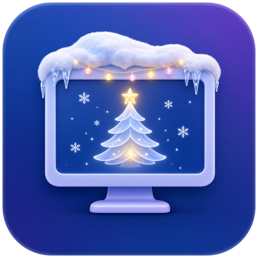
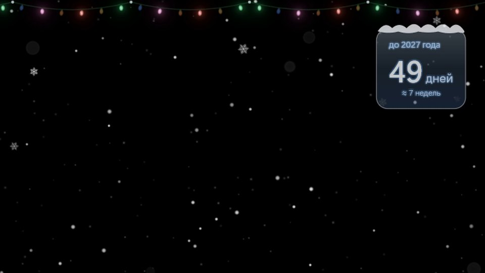
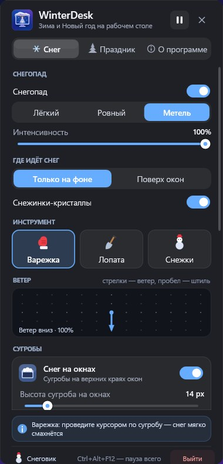
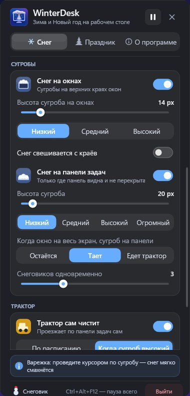
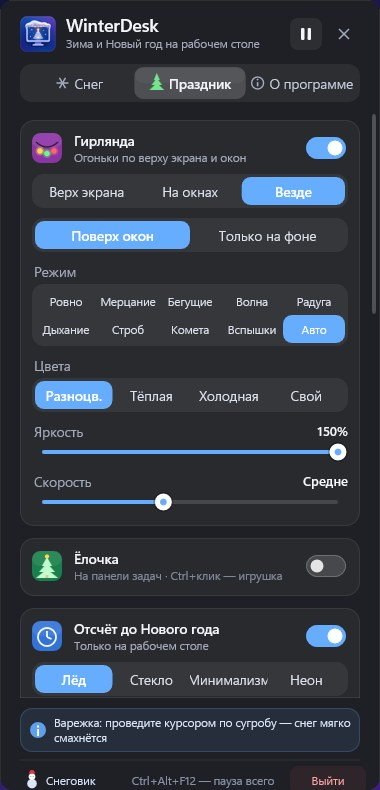
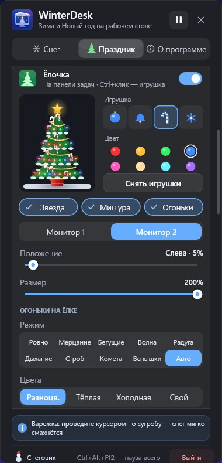
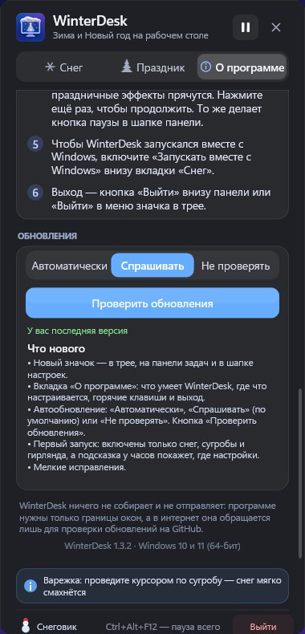

Пушистый снег идёт прямо по экрану, копится сугробами на окнах и панели задач, а гирлянды, ёлочка, салют и отсчёт до полуночи создают настоящее праздничное настроение.

Всё включается и настраивается в одной аккуратной панели — по щелчку на значок у часов.
Объёмные хлопья на всех мониторах: крупные и размытые вблизи, мелкие вдали. Ветер, метель или тихий снежок.
Снег копится на верхних краях окон и на панели задач. Подвиньте окно — сугроб поедет, потрясите — осыплется.
По верху экрана и на окнах: десяток режимов огоньков, свои цвета и яркость.
Нарядная ёлка на панели задач с огоньками, мишурой и звездой. Игрушки можно развесить самому.
Красивый таймер на рабочем столе, а в полночь — большой финал «С Новым годом!» и салют.
Фейерверки за окнами или поверх них, сани с оленями пролетают по небу.
Смахивайте снег варежкой или лопатой, катайте снежки с Ctrl — из трёх шаров вырастет снеговик.
Расчищает панель задач по кнопке или сам — по расписанию или когда сугроб вырастет.
Клики проходят сквозь снег, в играх и видео на весь экран — автопауза. Ctrl+Alt+F12 — пауза всего.
Настоящие записи с рабочего стола Windows 11 — без монтажа.

Нажмите на значок WinterDesk в трее — каждую часть праздника можно включить, выключить и настроить.





Устанавливать ничего не нужно — это одна маленькая программа.
Нажмите «Скачать» — загрузится архив WinterDesk-win64.zip с последней версией (все версии).
В любую папку, например «Документы\WinterDesk», и запустите WinterDesk.exe.
Если Windows покажет синее окно SmartScreen — нажмите «Подробнее» → «Выполнить в любом случае».
Щёлкните значок WinterDesk в трее у часов. Не видно? Он может прятаться под стрелкой ^.
Если что-то непонятно — скорее всего, ответ здесь.
Это SmartScreen: программа новая и пока не подписана сертификатом. Нажмите «Подробнее», затем «Выполнить в любом случае». Скачивайте WinterDesk только со страницы выпусков на GitHub.
В панели, которая открывается щелчком по значку WinterDesk в трее (справа внизу, у часов). Если значка не видно, нажмите стрелку ^ рядом с часами — его можно перетащить оттуда на панель задач. Правый клик по значку — быстрое меню.
Ctrl+Alt+F12 — пауза всего, ещё раз — продолжить. Выйти: кнопка «Выйти» внизу панели или пункт «Выйти» в меню значка.
WinterDesk сам проверяет новые версии. Во вкладке «О программе» можно выбрать: обновляться автоматически, спрашивать или не проверять. Настройки при обновлении сохраняются.
Нет: программа работает с пониженным приоритетом, рисует через видеокарту и сама встаёт на паузу, когда игра или видео развёрнуты на весь экран.
Включите «Запускать вместе с Windows» внизу вкладки «Снег» в панели настроек.
Нет. WinterDesk нужны только границы окон, а в интернет он обращается лишь к GitHub, чтобы проверить обновления (это можно выключить).
Windows 10 или 11, 64-бит. Видеокарта с поддержкой DirectX 11 (есть практически в любом компьютере).